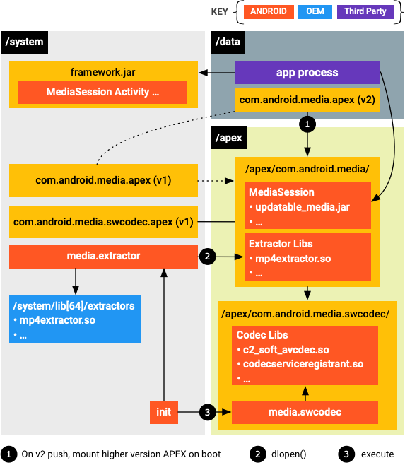

Android 10 provides updatable media components that enable updating framework components through Google Play Store infrastructure or through a partner-provided OTA mechanism. The feature allows providing security updates and feature updates without requiring a full system image update.
The updatable media components are as follows:
- Media extractors
- Media2 APIs (
MediaSession2) - Media codecs
Package format
The package format is Android Pony EXpress (APEX).
Updatable media components
This section describes changes introduced with Android 10 to make media components, such as media extractors, Media2 APIs, and media codes, updatable.
Media extractors
To prepare for updatability, media extractors have been made separate components (as opposed to
being compiled into libstagefright.so, as they were before Android 9). They are further
updated to rely only on NDK APIs.
Each extractor has its own .so file. The .so has an entrypoint that provides a sniffer function
to determine whether the extractor can handle the given media file, and a factory function that
creates an instance of the extractor for the given media file. Each extractor is named and
versioned. The naming helps with debugging, while the versioning indicates which
extractor is the newest. Because Android loads all available extractor .so files,
OEMs can add their own extractors simply by adding a new .so file, without any
need to modify libstagefright or other media framework libraries. If the OEM updates the
extractors, then
Google finds them and uses them (there are various ways to ensure that the OEM extractor is
preferred over the Google-provided extractor, if needed).
Media2 APIs (MediaSession2)
This section covers the Media2 component being added to updatable media components, specifically MediaSession2.
The MediaSession2 API added in Android 10 uses a process to allow a media app to expose its transport controls and playback information to other processes including the Android framework and other apps.
Media codecs
The existing OMX codec API isn't updatable, but OEMs can still use it in the vendor partition in 10. In 10, SW Codec2 components are updatable.
Customization options and update mechanism
This section outlines the update mechanism and the way to add vendor extensions.
Update mechanism
APEX is a new container format designed for updating system components through Play Store. Updates are provided through an APEX package. This package contains the Java and native code being updated, which are loaded by framework components already present on the device.

After the APEX package is installed and the disk image is mounted on reboot, media system processes
(media.extractor and media.codec) load the updated modules from the
mount point.
Vendor extensions
Media extractor
For media extractor, the partners can use their own extractor plugins if Google’s
default extractors don’t meet their requirements. Custom extractor plugins can be placed
under /system/lib[64]/extractors/ and the extractor process loads the extractor
plugins from Google’s APEX package and from /system/lib[64]/extractors/.
Media codec
For media codec, partners need to set up vendor codec services. A skeleton implementation of a
service is provided at frameworks/av/media/codec2/hidl/services/. The service
needs to invoke the implementation of their components using the Codec 2.0 interface defined in
frameworks/av/media/codec2/core/. The entry point of the library is the C2ComponentStore
interface, and you can reference Android’s default software codec store implementation at
frameworks/av/media/codec2/vndk/C2Store.cpp.
Partners can use an APEX loading behavior similar to that in the mediaswcodec service. The vendor codec service process can be structured similarly to mediaswcodec. A top-level shared library responsible for registering all C2 components can be defined and packaged (with transitive dependencies) onto an APEX package residing on the vendor partition. The vendor codec service process can then load this top-level entrypoint when it starts.
Media2 APIs (MediaSession2)
For MediaSession2, vendor modification isn't allowed while the code is open sourced
for AOSP devices. For existing modifications on legacy MediaPlayer and
MediaSession APIs, vendors are expected to upstream their changes as much as they
can. When upstreaming isn't possible, Google considers providing extensions by
reviewing them case by case.
Life of a customization
In an example of adding support for Windows Media video in AVI files, two main components are needed to support additional media types in the Android media framework: an AVI Extractor and a Windows Media video Decoder.
Extractor
The extractor should implement the API defined by
frameworks/av/include/media/MediaExtractorPluginApi.h, and may use the C++
convenience wrappers in frameworks/av/include/media/MediaExtractorPluginHelper.h.
See the latest version in the AOSP code for the extractor plugin API.
Extractors should only depend on stable NDK APIs, not private APIs.
Vendor extractors should be in /system/lib/64/extractors or the vendor APEX, which is
opened along with the Google APEX containing the Google extractors.
You can check whether your extractor was loaded by the framework by running adb shell
dumpsys media.extractor, which generates something like this.
Available extractors: AAC Extractor: plugin_version(2), uuid(4fd80eae03d24d729eb948fa6bb54613), version(1), path(/system/lib64/extractors/libaacextractor.so) AMR Extractor: plugin_version(2), uuid(c86639c92f3140aca715fa01b4493aaf), version(1), path(/system/lib64/extractors/libamrextractor.so) FLAC Extractor: plugin_version(2), uuid(1364b048cc454fda9934327d0ebf9829), version(1), path(/system/lib64/extractors/libflacextractor.so) MIDI Extractor: plugin_version(2), uuid(ef6cca0af8a243e6ba5fdfcd7c9a7ef2), version(1), path(/system/lib64/extractors/libmidiextractor.so) MP3 Extractor: plugin_version(2), uuid(812a3f6cc8cf46deb5293774b14103d4), version(1), path(/system/lib64/extractors/libmp3extractor.so) MP4 Extractor: plugin_version(2), uuid(27575c6744174c548d3d8e626985a164), version(2), path(/system/lib64/extractors/libmp4extractor.so) MPEG2-PS/TS Extractor: plugin_version(1), uuid(3d1dcfebe40a436da574c2438a555e5f), version(1), path(/system/lib64/extractors/libmpeg2extractor.so) Matroska Extractor: plugin_version(2), uuid(abbedd9238c44904a4c1b3f45f899980), version(1), path(/system/lib64/extractors/libmkvextractor.so) Ogg Extractor: plugin_version(2), uuid(8cc5cd06f772495e8a62cba9649374e9), version(1), path(/system/lib64/extractors/liboggextractor.so) WAV Extractor: plugin_version(3), uuid(7d61385858374a3884c5332d1cddee27), version(1), path(/system/lib64/extractors/libwavextractor.so)
Only the highest version of the extractor API is supported in Android 10. When looking at current extractors to model your own extractor after, use the one with the highest API version number.
Instead of adding an extractor for a completely new format, you can extend an existing
extractor, for example, to support new video encoding packaged in MP4 files. The preferred
way to do this is to upstream your changes. This way your changes become part of the
platform, and you no longer need to maintain your own extractor. If you can't or prefer not
to upstream your changes, you have to create a separate extractor as described above. The
only difference is that your extractor supports a format that is already supported by another
extractor. To ensure that your extractor is used, its Sniff() function should
return a higher confidence level than the Google-provided one.
Decoder
When your extractor is in place and loaded by the media framework, the media framework can recognize the file and get information about its content.
The next step is to add a decoder for the format you're adding support for.
In our Windows-Media-in-AVI example, a Windows Media decoder is needed.
Adding a new decoder is done in much the same way as adding your own hardware decoders for AVC or HEVC, for example.
Media scanner
If you want your newly supported file type to be picked up by the media scanner and added to the media database, then the media scanner must know about it.
Starting in Android 10, the MediaFile.java file
no longer contains
a MIME-to-extension mapping. Instead, this mapping is maintained by MimeUtils in
libcore. The list of MIME types contains a list of the current mappings.
MediaFile still contains a mapping from MIME type to MTP format constants.
Our example AVI is already included in this mapping.
Extractors can export a list of filename extensions they support (MP3, MP4, and so on). However,
that list is only used when LegacyMediaScanner is used. It has no effect on
ModernMediaScanner, which used by default.